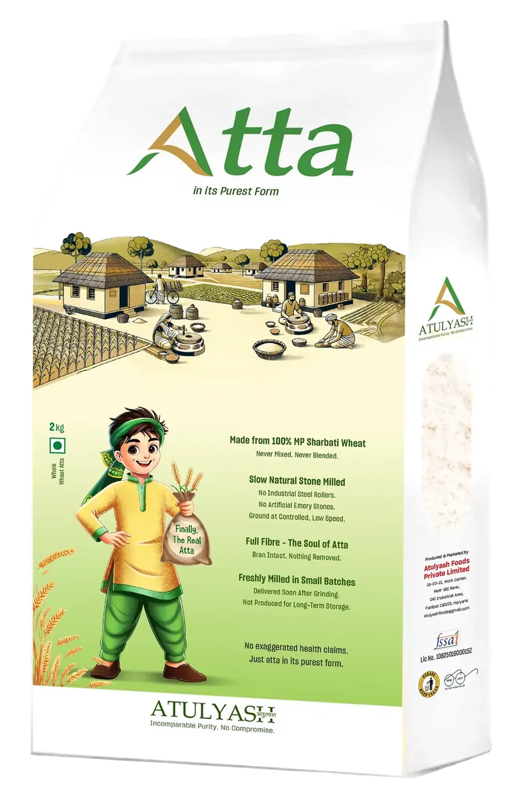

Atta in its purest form
Ours is milled slowly on natural stone. Fresh, every week.

Freshly milledDelivered weekly
Ours is milled slowly on natural stone. Fresh, every week.

Freshly milledWe keep changing everything around us. Our skincare, our cooking oil, even our utensils, because we research what is best for our family. So why don't we stop and think about our atta? Its quality, where it comes from, how it is made. We just take their word for it.